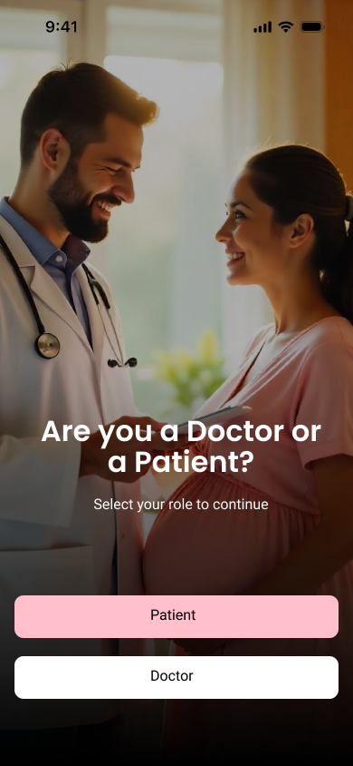
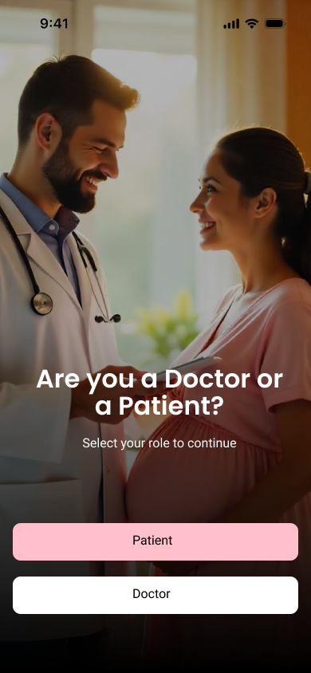
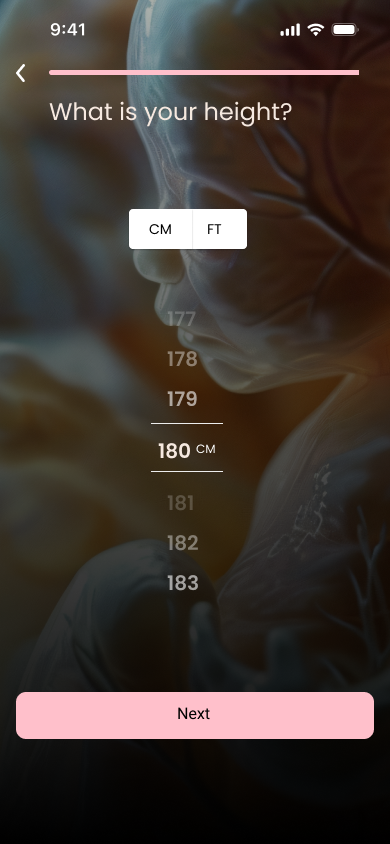
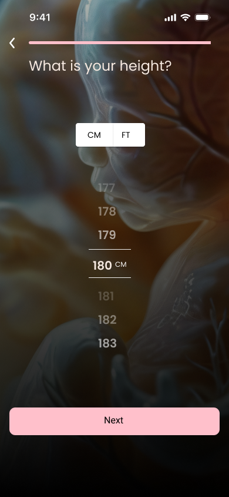
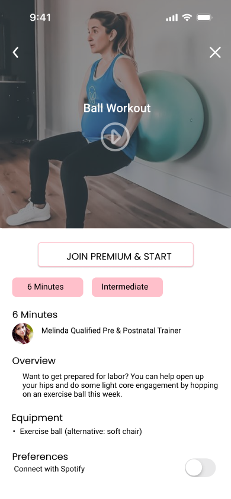
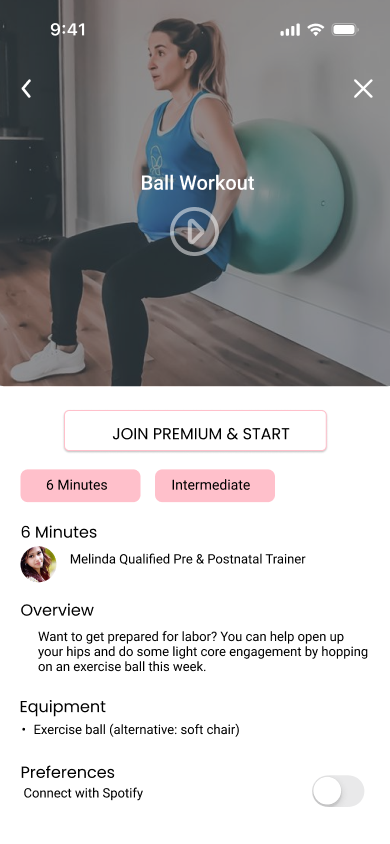

Role
UX/UI Designer
Tools Used
Figma, Google Forms
Duration
2.5 months
Project Description
MumMoment is a mobile application designed to support pregnant women throughout their pregnancy journey by offering personalized, expert-backed guidance. The app was created to address the real needs of expecting mothers, including nutritional guidance, symptom tracking, mental well-being, physical health, and access to reliable information — all in one intuitive platform.
Problem
Current pregnancy apps often fall short in one or more areas — they may lack customization by pregnancy stage, fail to offer expert-verified content, overlook mental wellness, or overwhelm users with cluttered interfaces and unnecessary features. Moreover, many women—especially those in remote areas or with busy schedules—face challenges in accessing timely guidance, tracking their symptoms, or connecting with healthcare providers. This leads to anxiety, confusion, and a lack of confidence in managing their own and their baby’s health.
1. User Interviews
- Conducted detailed interviews with expecting mothers from various pregnancy stages (first to third trimester), including working women, stay-at-home moms, and first-time parents.
- Explored their daily routines, challenges with existing pregnancy apps, emotional stress points, and unmet needs regarding nutrition, mental health, and fitness tracking.
- These insights shaped core features such as trimester-specific guidance, water & medicine reminders, daily tips, and emotional check-ins.

2. User Research
- Conducted online surveys and empathy mapping with 20+ users to understand behavioral patterns, pain points, and app preferences.
- Identified common user goals such as having a supportive and stress-free pregnancy journey, connecting with healthcare professionals, and monitoring baby growth.
- These findings informed decisions for layout, accessibility, and onboarding flows tailored to reduce overwhelm and increase clarity.

3. Competitive Analysis
- Analyzed leading pregnancy and wellness apps such as BabyCenter, What to Expect, Ovia, and Flo.
- Identified common gaps like lack of personalization, limited emotional health support, and cluttered UI.
- Discovered features like daily health tips, milestone tracking, and baby growth visuals were popular—but often lacked customization for different pregnancy stages.

4. Persona Development
- Created user personas based on real interviews and survey data from pregnant women across different lifestyles and pregnancy stages
- Documented unique needs, frustrations, and behaviors related to health tracking, emotional support, and accessing expert advice.
- These personas helped define core UX priorities like intuitive onboarding, gentle tone, weekly goal tracking, and 24/7 accessibility.
5. Visual Design
- Established a soft, calming visual identity using a pink-accented palette to reflect care and empathy in maternal wellness.
- Selected Poppins for bold headlines and Josefin Sans for elegant body text, ensuring clarity and visual balance.
- Created a consistent UI system with accessible color contrast, rounded components, and uniform spacing.
6. Prototype
- Developed high-fidelity prototypes in Figma, addressing key flows like onboarding, stage selection, health tracking, and personalized insights.
- Designed using a mobile-first approach with intuitive gestures, clear CTAs, and frictionless screen transitions to enhance usability.
- The prototype helped validate layout consistency and provided a foundation for future user testing.
High-Fidelity Designs

 



 



 



Thank You!
For taking the time to explore my portfolio.
Have an exciting project in mind?
Let’s collaborate and create something impactful together.